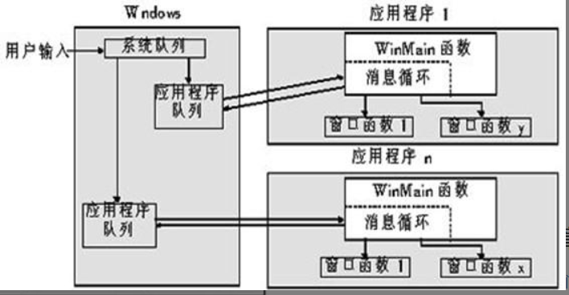
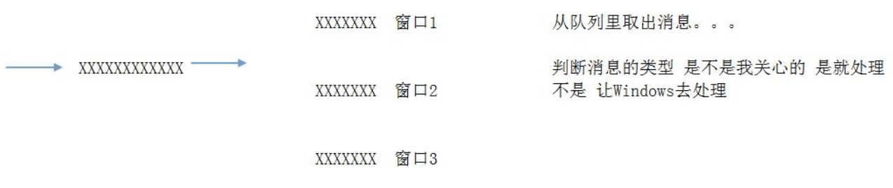
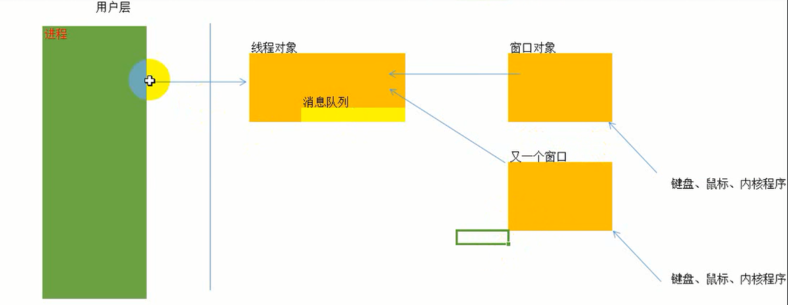
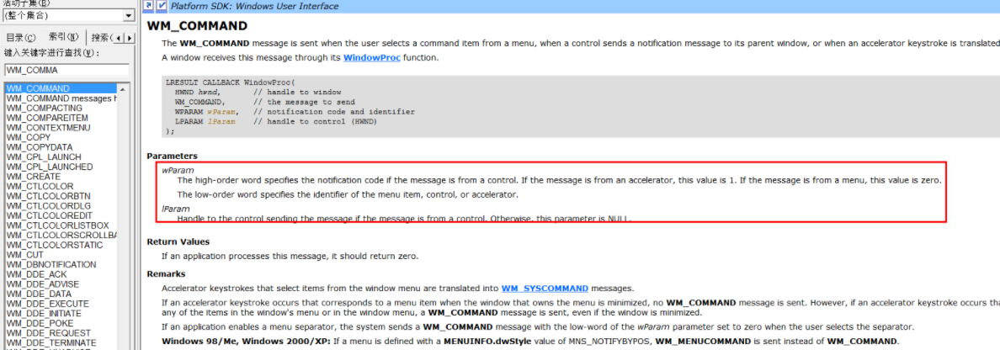
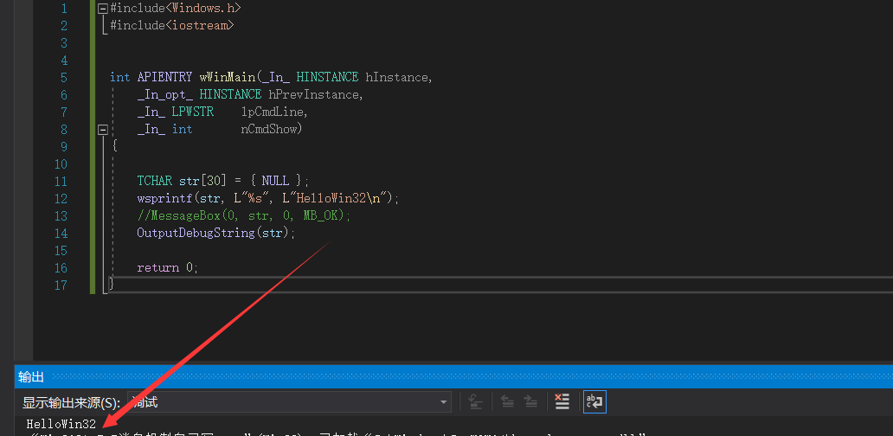

# 事件和消息
Windows 中的事件是一个 "动作"，这个动作可能是用户操作应用程序产生的，也可能是 Windows 自己产生的.
而消息，就是用来描述这些 "动作" 的，比如：
1 这个动作是什么时候产生的？
2 哪个应用程序产生的？
3 在什么位置产生的？
等等。。。
# 事件驱动消息 消息封装事件
Windows 为了能够准确的描述这些信息，提供了一个结构体：MSG，该结构体里面记录的事件的详细信息。
typedef struct tagMSG { | |
HWND hwnd; // 窗口句柄 | |
UINT message; // 消息类型 | |
WPARAM wParam; // 对消息类型进一步描述 | |
LPARAM lParam; // 同上 | |
DWORD time; // 动作发生时间 | |
POINT pt; // 坐标，结构体封装了，内部是 x，y | |
} MSG, *PMSG; |
说明：
1、hwnd
表示消息所属的窗口
一个消息一般都是与某个窗口相关联的
在 Windows 中 HWND 类型的变量通常用来标识窗口。
2、message
在 Windows 中，消息是由一个数值来表示的
但是由于数值不便于记忆，所以 Windows 将消息对应的数值定义为 WM_XXX 宏（WM == Window Message）
鼠标左键按下 WM_LBUTTONDOWN 键盘按下 WM_KEYDOWN
3、wParam 和 lParam
32 位消息的特定附加信息，具体表示什么处决于 message
4、time
消息创建时的时间
5、消息创建时的鼠标位置
具体来说：如下图，用户输入后，封装成消息，加入系统的消息队列，然后应用程序那还有队列
用来存储自己的消息队列，所以系统队列到应用程序队列是分流而治的过程。

从队列中取出消息，使用的是循环机制，就是不停的取出消息，而后面的判断消息类型是不是我们关心的意思其实是
我们是否写了该消息下的响应函数，或者说回调函数。
具体流程如下图：

# 消息机制
我们了解了窗口其实是绘制出来的，而且是不断绘制的过程，所以窗口的本质是绘制， 但是我们现在看到的窗口程序，都可以点击关闭按钮 使用鼠标点击会有反应.
而我们要怎么实现呢？
其实鼠标点击是产生了一个消息。window 把这个消息封装成了消息结构体。 发送给了我们的窗口程序。
那么 windows 怎么知道你点击的那个窗口呢？
是这样的 当我们点击的时候 会记录点击坐标。消息。等等 windows 系统会接受到 然后遍历内核中的 WINOBJ 结构 而这个结构中存储着窗口对象 窗口对象对应着消息线程.
所以 windows 一层一层的遍历。则找到了对应的窗口以及窗口对应的线程。然后发送给我们的应用程序
上面说的我们需要了解 要知道消息怎么产生的 怎么传递的。那么下面编程就明白了.
例如下图:

每个应用程序都有一个线程对象 而这个线程对象如果创建窗口。那么内核中就有这个窗口对象.
如果我们有鼠标点击的消息。键盘消息等等。操作系统都会遍历窗口对象 而窗口对象也会保存着创建这个窗口对象对应的线程对象 而这个线程对象中则有消息队列.
这样的话操作系统则会封装消息发送给我们窗口对象
# 消息类型
我们回调中有我们的消息类型，我们可以判断消息类型进行我们不同的操作。
比如菜单消息
WM_COMMAND ， 如果是这个消息。那么回调函数的 wparam 等附加信息就是 WM_COMMAND 的附加消息了 我们可以取低位得出操作的菜单 ID. 进而进行消息处理.
WM_PAINT 这个消息是绘制的消息。我们知道。窗口是不断绘制的。所以绘制消息会一直来.
WM_DESTROY 窗口关闭消息 如果接受到这个消息。则调用 API 往消息队列中 (MSG) 中传递退出消息 此时外层主线程就会结束.
具体 API:postQuitMessage(0);
当前具体的消息还要查询 MSDN, 因为消息种类很多.
windows 消息都是 WM 开头的
比如查询 WM_COMMAND 消息

可以清楚的看到它会告诉你如果是 WM_COMMAND 消息来了那么回调函数的参数分别代表的是什么意思。
# 窗口类结构
创建窗口程序
# 进行窗口编程需要注意的问题
在 Windows 中进行窗口编程，入口点已经改成 WinMain 了 有四个参数
如以下代码所示
int APIENTRY wWinMain(_In_ HINSTANCE hInstance, // 窗口的实例句柄 hinstance 代表模块意思 HWND 代表窗口意思 HANDLE 代表内核对象 HDC 设备上下文 | |
_In_opt_ HINSTANCE hPrevInstance, // 父窗口句柄 已淘汰 | |
_In_ LPWSTR lpCmdLine, // 命令行参数 | |
_In_ int nCmdShow) // 命令 最大化命令还是最小化命令 | |
{ | |
return 0; | |
} |
wWinMain 因为有 UNICODE 跟 ASCII 区别，所以 UNICODE 使用 wWinMain ， ASCII 版就是用 WinMain
这里我上网上查了一下
其实并不是程序中有中文时就必须用 Unicode 字符集，当 windows 系统语言为中文时，不管你选择哪个字符集都是可以正常显示中文的，但是系统语言不为中文时就会出现乱码了。所以如果你的软件需要适应多语言的 windows 系统的话就得用 Unicode 字符集。
另外需要说明的是，当字符集为 Unicode 时，向 api 函数传递的一个字符串的时候应该将该字符串转换为 Unicode 编码的，可用 L 转换：CreateWindow(wndClass, L"这是窗口标题", ......);
# 进行 Windows 编程的调试手法
在 Windows 中我们调试程序不能简单的使用 printf 进行调试。或者打印输出了 我们可以使用两个 API 进行操作.
1 wsprintf() 格式化字符串
2 OutPutDebugString() 输出调试字符串
详细参见百科：
https://baike.baidu.com/item/wsprintf
https://baike.baidu.com/item/OutputDebugString
因为 OutPutDebugString() 只能打印固定字符串
所以使用 wsprintf 进行格式化字符串，如下面代码
int APIENTRY wWinMain(_In_ HINSTANCE hInstance, | |
_In_opt_ HINSTANCE hPrevInstance, | |
_In_ LPWSTR lpCmdLine, | |
_In_ int nCmdShow) | |
{ | |
TCHAR str[30] = { NULL }; | |
wsprintf(str, L"%s", L"HelloWin32"); | |
//MessageBox (0, str, 0, MB_OK);// 也可以弹个窗 | |
OutputDebugString(str); | |
return 0; | |
} |
我们编译出程序之后，可以使用 DebugView 这款工具查看，也可以在编译器的调试窗口看

# 窗口编程的步骤
1 创建窗口类
windows 提供的窗口样式。我们需要给定.
2 注册窗口类
创建了窗口我们需要注册到 windows 系统中.
3 创建窗口
如果注册窗口成功。那么我们需要创建出来这个窗口。并且显示跟更新.
4 消息处理
# 窗口编程需要的主要结构
窗口的创建 Windows 已经为我们提供了，这个结构就是 WNDCLASSEX 结构
看下这个结构中的内容吧
typedef struct _WNDCLASSEX { | |
UINT cbSize; 扩展的大小 既自己WndClass本身大小. | |
UINT style; 风格 | |
WNDPROC lpfnWndProc; 窗口回调.消息都要进入这个回调 | |
int cbClsExtra; | |
int cbWndExtra; | |
HINSTANCE hInstance; 实例句柄 | |
HICON hIcon; 图标 | |
HCURSOR hCursor; 光标 | |
HBRUSH hbrBackground; 背景 | |
LPCTSTR lpszMenuName; 菜单名称 | |
LPCTSTR lpszClassName; 类名称 | |
HICON hIconSm; 最小化图标 | |
} WNDCLASSEX, *PWNDCLASSEX; |
你的窗口是什么样式、 大小、是否有图标、 消息处理函数在哪里等等，需要我们给指定。
还有一个 WNDCLASS 结构，这个是兼容老版本的。如今一般用 WNDCLASSEX
详细见 https://blog.csdn.net/qq_31243065/article/details/83513795
# 创建一个窗口程序的详细步骤
步骤 1：创建 Windows 应用程序 选择空项目
步骤 2：在新建项窗口中选 C++ 代码文件 创建一个新的 cpp 文件
步骤 3：在新的 cpp 文件中添加:#include <Windows.h>
并添加入口函数：
int CALLBACK WinMain( // CALLBACK 是一个宏 #define CALLBACK __stdcall 所有的 Win32 API 函数都遵循该约定 此外 #define WINAPI __stdcall #define APIENTRY WINAPI | |
_In_ HINSTANCE hInstance, // 应用程序当前实例的句柄 | |
_In_ HINSTANCE hPrevInstance, | |
_In_ LPSTR lpCmdLine, | |
_In_ int nCmdShow | |
){return 0;} |
步骤 4：设计窗口类
既能用WNDCLASS也能用WNDCLASSEX
例：
// 窗口的类名 | |
TCHAR className[] = "My First Window"; | |
// 创建窗口类的对象 | |
WNDCLASS wndclass = {0}; // 一定要先将所有值赋值 | |
wndclass.hbrBackground = (HBRUSH)COLOR_MENU; // 窗口的背景色 | |
wndclass.lpfnWndProc = WindowProc; // 窗口过程函数 也叫回调函数 | |
wndclass.lpszClassName = className; // 窗口类的名字 | |
wndclass.hInstance = hInstance; // 标识该窗口所在的实例 |
步骤 5：注册窗口类 (这是什么？哈哈哈，就是把结构体赋值后传参调用)
RegisterClass(&wndclass); |
步骤 6：创建窗口
// 创建窗口 | |
HWND hwnd = CreateWindow( | |
className, // 类名 | |
TEXT("我的第一个窗口"), // 窗口标题 | |
WS_OVERLAPPEDWINDOW, // 窗口外观样式 | |
10, // 相对于父窗口的 X 坐标 | |
10, // 相对于父窗口的 Y 坐标 | |
600, // 窗口的宽度 | |
300, // 窗口的高度 | |
NULL, // 父窗口句柄，为 NULL | |
NULL, // 菜单句柄，为 NULL | |
hInstance, // 当前应用程序的句柄 | |
NULL // 附加数据一般为 NULL | |
); | |
if(hwnd == NULL){ | |
TCHAR str[30] = { NULL }; | |
wsprintf(str, L"%s", L"HelloWin32"); | |
OutputDebugString(str); | |
} |
步骤 7：显示窗口
// 显示窗口 | |
ShowWindow(hwnd, SW_SHOW); |
步骤 8：消息循环
GetMessage 函数说明：https://baike.baidu.com/item/GetMessage
MSG msg; | |
BOOL bRet; | |
while((bRet=GetMessage(&msg,hwnd,0,0))!=0) | |
{ | |
//TranslateMessage (&msg); // 键盘消息转换为小写. | |
DispatchMessage(&msg); // 分发消息。将我们的消息传递给我们的回调函数处理 重要函数。此消息会将 Windows 的消息。发送给我们 定义窗口类的时候给的回调函数。这样我们就可以根据消息执行我们代码了. | |
} |
步骤 9：回调函数
例：
/* | |
窗口消息处理程序 窗口回调函数： | |
1、窗口回调函数处理过的消息，必须传回 0. | |
2、窗口回调不处理的消息，由 DefWindowProc 来处理. | |
*/ | |
// 函数: WndProc (HWND, UINT, WPARAM, LPARAM) | |
// | |
// 目的：处理主窗口的消息。 | |
// | |
// WM_COMMAND - 处理应用程序菜单 | |
// WM_PAINT - 绘制主窗口 | |
// WM_DESTROY - 发送退出消息并返回 | |
LRESULT CALLBACK WindowProc( | |
IN HWND hwnd, | |
IN UINT uMsg, | |
IN WPARAM wParam, | |
IN LPARAM lParam | |
) | |
{ | |
switch(uMsg) { | |
// 窗口消息 | |
case WM_COMMAND: { // 菜单消息类型 | |
int wmId = LOWORD(wParam); // 取低两位为菜单 ID. 根据菜单 ID 可以进行操作我们的窗口 | |
// 分析菜单选择: | |
switch (wmId) { | |
case IDM_EXIT: | |
DestroyWindow(hWnd); | |
break; | |
default: | |
return DefWindowProc(hWnd, message, wParam, lParam); // 如果不处理。则必须调用这个函数教给默认的窗口回调处理 | |
} | |
} | |
break; | |
case WM_CREATE: | |
{ | |
DbgPrintf("WM_CREATE %d %d\n",wParam,lParam); | |
CREATESTRUCT* createst = (CREATESTRUCT*)lParam; | |
DbgPrintf("CREATESTRUCT %s\n",createst->lpszClass); | |
return 0; | |
} | |
case WM_MOVE: | |
{ | |
DbgPrintf("WM_MOVE %d %d\n",wParam,lParam); | |
POINTS points = MAKEPOINTS(lParam); | |
DbgPrintf("X Y %d %d\n",points.x,points.y); | |
return 0; | |
} | |
case WM_SIZE: | |
{ | |
DbgPrintf("WM_SIZE %d %d\n",wParam,lParam); | |
int newWidth = (int)(short) LOWORD(lParam); | |
int newHeight = (int)(short) HIWORD(lParam); | |
DbgPrintf("WM_SIZE %d %d\n",newWidth,newHeight); | |
return 0; | |
} | |
case WM_DESTROY: // 销毁 | |
{ | |
DbgPrintf("WM_DESTROY %d %d\n",wParam,lParam); | |
PostQuitMessage(0); | |
return 0; | |
} | |
// 键盘消息 | |
case WM_KEYUP: | |
{ | |
DbgPrintf("WM_KEYUP %d %d\n",wParam,lParam); | |
return 0; | |
} | |
case WM_KEYDOWN: | |
{ | |
DbgPrintf("WM_KEYDOWN %d %d\n",wParam,lParam); | |
return 0; | |
} | |
// 鼠标消息 | |
case WM_LBUTTONDOWN: | |
{ | |
DbgPrintf("WM_LBUTTONDOWN %d %d\n",wParam,lParam); | |
POINTS points = MAKEPOINTS(lParam); | |
DbgPrintf("WM_LBUTTONDOWN %d %d\n",points.x,points.y); | |
return 0; | |
} | |
//default: | |
// return DefWindowProc (hWnd, message, wParam, lParam);// 扔给 windows 处理其他消息 | |
} | |
return DefWindowProc(hwnd,uMsg,wParam,lParam); // 扔给 windows 处理其他消息 | |
} |
MFC 就是基于此封装
# Reference
滴水逆向课件
https://www.cnblogs.com/iBinary/p/9580268.html
https://blog.csdn.net/dfg0823/article/details/101964423
https://blog.csdn.net/Zz22333/article/details/89084562